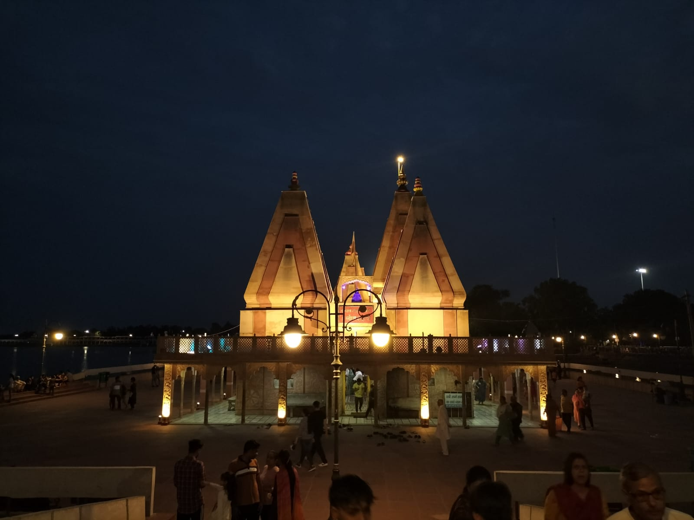
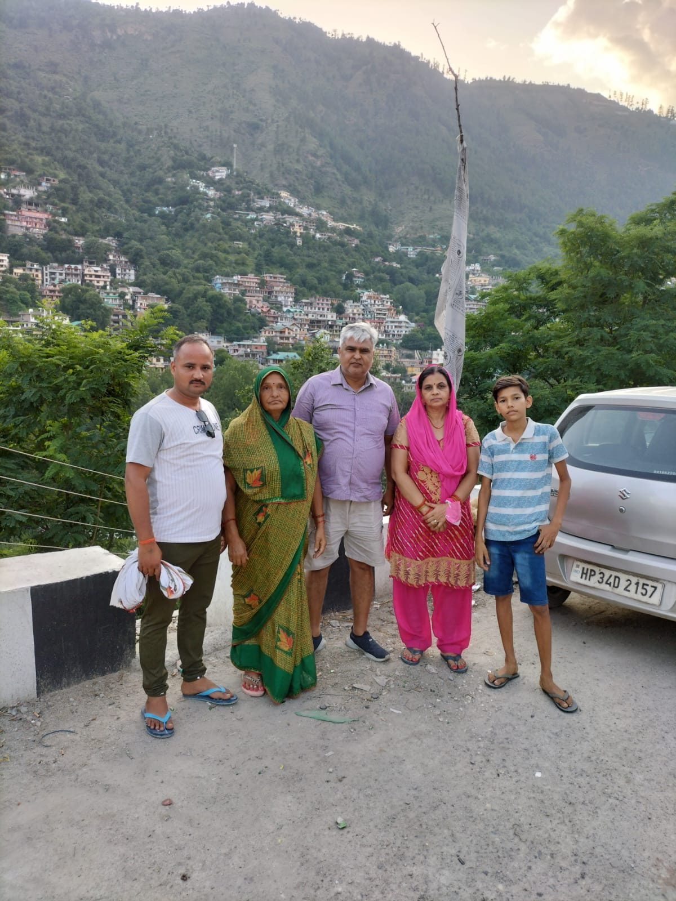
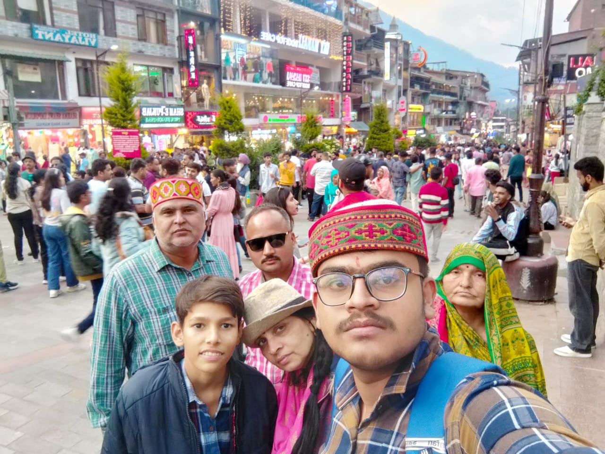
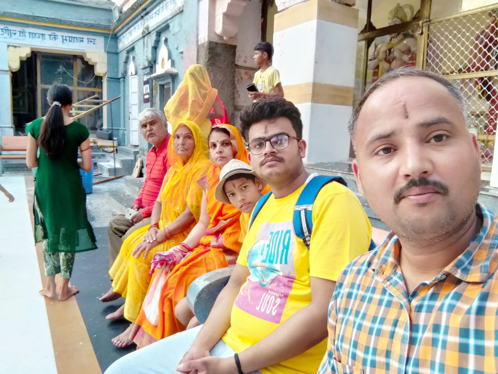
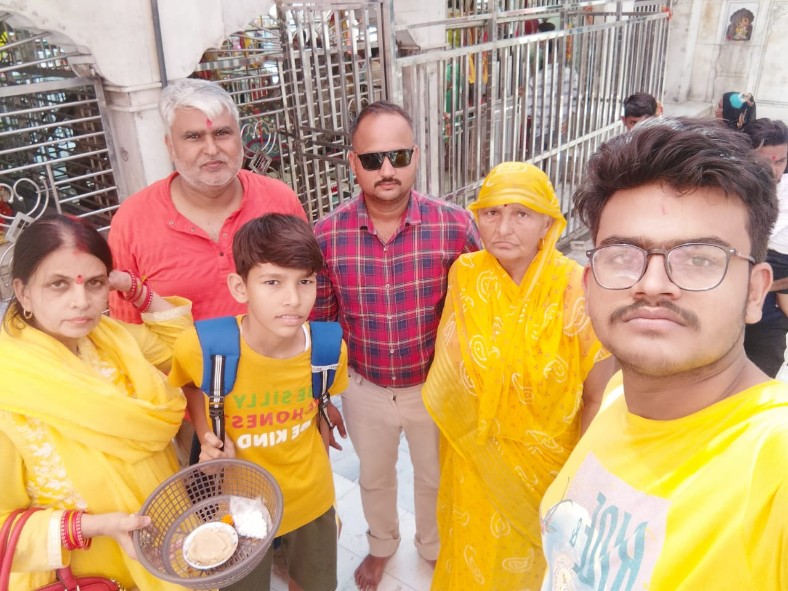
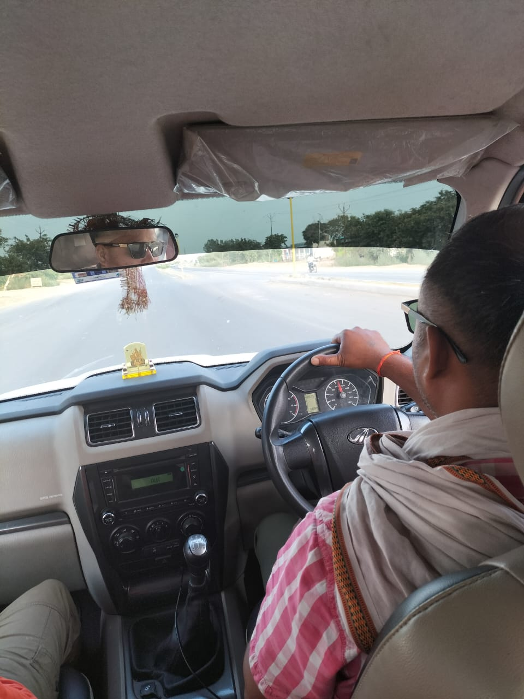

OUR MANALI TRIP
THE KURUKSHETRA TOUCH

- Our first stop after leaving from Aligarh is Kurukshetra.We stay one night there in our relatives house.
- On the arrival,we travel and saw many temples there.
- After staying there for a night,we then left the next morning for our destination Manali.
To know more about Kurukshetra:Click here
ARRIVAL IN MANALI

- We arrived at our manali hotel at 7pm after leaving Kurukshetra.
- We had driven from hilly roads and many tunnels.
- We stopped at Kullu to drink some tea and took many photos.
- We passed from many dangerous roads,tunnels and beautiful mountains.
To learn more about Manali:Click here
EXPLORING MANALI

- We are on our third day and today we explored Manali and Rohtang.
- We first go to Rohtang via Atal Tunnel which is 9 km long.
- Then we play with snow in Rohtang nearly 12K foot above ground level.
- After that we gone to Maal Road in Manali and explore the market
- And finally we get back to our hotel.
To know more about Rohtang:Click here
ARRIVAL IN NAGARKOT

- We are on our fourth day and going to Kangra.
- After travelling for whole day we arrived in Kangra by 5pm.
- We took bath in Badh Ganga and then went for Nagakot.
- We went inside the temple and perform our prayers
- And finally we went to JwalaMukhi and stayed at our hotel.
To know more about Nagarkot:Click here
JWALAMATA AND CHINTPURNI DAY

- We are on our fifth day and going to Kurukshetra via ChintPurni.
- In morning we went to Jwala Mata Mandir and then ChintPurni Mandir.
- After that,we headed towards Kurukshetra.
- We got to Kurukshetra at 9:30pm.
- And after staying whole night there,we went back to Aligarh.
To know more about ChintPurni:Click here
RETURN TO ALIGARH

- We are on our sixth day and going back to Aligarh.
- After end to the beutiful trip we are going back.
- We arrived in Aligarh from Kurukshetra by 6:30pm
- Yatendra Chacha drove us from Kurukshetra to Aligarh.
- And after long trip,we came back to Aligarh.
To see our full album:Click here